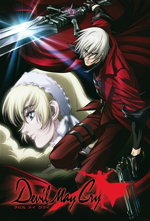

Devil May Cry (2007)
HorrorFantasyAnimationAdventureActionAnime
| Year | 2007 |
|---|---|
| Rating | TV-MA |
| Status | Completed |
| Seasons | 2 |
| Episodes | 13 |
| Genre | Horror, Fantasy, Animation, Adventure, Action, Anime |
Dante, a demon hunter, runs an agency called "Devil May Cry". He is hired to protect Patty Lowell, a young orphan who has just inherited her late father’s entire estate. While Patty searches for her mother, her relatives—and demons—are trying to kill her to seize the inheritance meant for her. As if that weren’t enough, the demons are also after a mysterious necklace the helpless girl is wearing. What could be so important about this jewel?
Episodes
Specials
| # | Title | Air Date | Synopsis |
|---|---|---|---|
| 1 | DMC 4 The movie | 2011-05-15 |
Season 1
Dante, a demon hunter, runs an agency called “Devil May Cry”. He is hired to protect Patty Lowell, a little orphan girl who has just received her late father's entire estate. At the same time as Patty wants to find her mother, her relatives and the demons want to kill her in order to keep the inheritance that was meant for her. To top it off, the demons want the mysterious necklace that the helpless little girl is wearing. What could be so important about this jewel?
| # | Title | Air Date | Synopsis |
|---|---|---|---|
| 1 | Devil May Cry | 2007-06-14 | Dante, a supernatural mercenary, is hired as the bodyguard of a young orphaned girl who is the heir to a large fortune. He must protect her from the demons sent by those who want the estate for themselves |
| 2 | Highway Star | 2007-06-21 | Dante reluctantly accepts a mission from Lady to stop a demonically possessed motorcycle named "Red Eye" that haunts the motorway. |
| 3 | Not Love | 2007-06-28 | The daughter of the mayor starts seeing a mysterious man behind her father's back. Under suspicions that the man is a demon in disguise, Dante is sent to investigate, and ends up entangled in something bigger than just a |
| 4 | Rolling Thunder | 2007-07-05 | Lady meets up with a strange demon-woman who has a lightning-like technique. Later it's revealed that the strange woman is Trish, Dante's former partner. |
| 5 | In Private | 2007-07-12 | Dante finds himself followed by a customer from a local diner, who is trying to find out the devil hunter's secrets, in order to impress a local waitress whom he likes. |
| 6 | Rock Queen | 2007-07-19 | Dante is hired to protect treasure hunters from a sonic demon. Flashbacks show how a rock queen, Elena Hudson, was willing to give everything to be popular, only to see her fans become violent zombies addicted to her mus |
| 7 | Wishes Come True | 2007-07-26 | A man receives a visit from a demonic mask which claims to fulfill any wish he desires. The wishes he wants to make aren't made true, and instead, something he didn't want to happen is wished for, and the man ends up in |
| 8 | Once Upon A Time | 2007-08-02 | A man named Aaron keep on insisting that Dante is his childhood friend Tony and that he and his mother used to live in a small town before being banished by the town folks after a devil attacked the town 20 years ago. |
| 9 | Death Poker | 2007-08-09 | Dante is hired by a woman to deter her brother's gambling habits after her loses several rounds to Patty, the prize being strawberry sundaes. Apparently there is a gambler named King that if you lose to him you also lose |
| 10 | The Last Promise | 2007-08-26 | Dante is attacked by Barusa, a former servant of Sparda who now seeks the power of the Legendary Dark Knight. In the meantime, Barusa's brother tries to find a way to prevent the fight between Dante and Barusa. |
| 11 | Showtime | 2007-08-30 | Dante encounters Patty's mother, and Sid's carefully laid plans come to fruition as he finally harnesses the power of Abigail, a demon that fought against Mundus. |
| 12 | Stylish | 2007-09-06 | With Dante impaled and crucified in the demon dimension, it's up to Lady, Trish, Morrison and Patty to hold off Sid/Abigail's final assault on the world. |